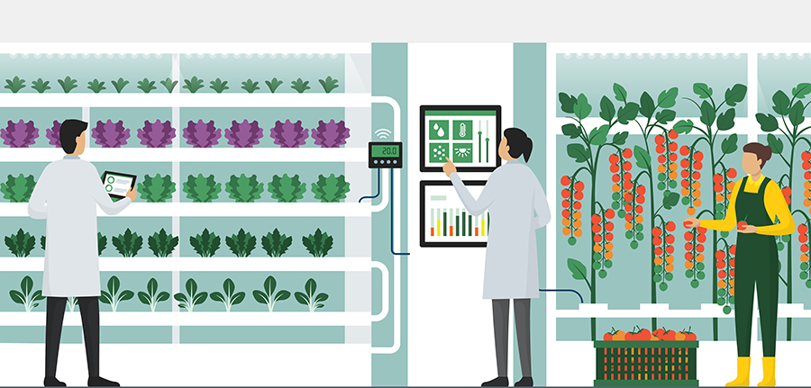

DESAFIO
O desafio proposto para nossa turma do 1º ano de Engenharia de Software da graduação ON foi criar um site de 5 páginas no estilo de um portal com informações a respeito do tema e sugerir uma solução que colabore com a erradicação da fome, além de um vídeo pitch de 3 min.
NOSSA SOLUÇÃO
A solução que pensamos para o problema proposto foi a utilização da tecnologia de aeroponia para a criação de plantações verticais como uma alternativa para a sustentabilidade agrícola.
Assista ao nosso Vídeo Pitch!AEROPONIA: A Revolução da Agricultura Suspensa
A aeroponia é uma técnica revolucionária na agricultura que permite o cultivo de plantas suspensas no ar, sem a necessidade de solo. Nesse método, as raízes das plantas são suspensas em um ambiente controlado, onde são pulverizadas com nutrientes e água. Essa abordagem inovadora apresenta uma série de vantagens e desvantagens, mas destaca-se como uma alternativa promissora no combate à fome mundial e na melhoria da sustentabilidade agrícola.
- Uso eficiente de recursos: A aeroponia requer apenas uma fração da água e dos nutrientes necessários em comparação com a agricultura convencional. Isso resulta em um uso mais eficiente dos recursos hídricos (podendo chegar a uma redução de até 90%!) e reduz a necessidade de fertilizantes, contribuindo para a sustentabilidade ambiental.
- Maior produtividade: A suspensão das raízes no ar permite que as plantas absorvam oxigênio e nutrientes de forma mais eficiente, resultando em um crescimento mais rápido e colheitas mais abundantes. A aeroponia pode aumentar significativamente a produtividade agrícola em relação aos métodos tradicionais (5x mais).
- Cultivo o ano todo: Com a aeroponia, é possível cultivar plantas em ambientes internos controlados, independentemente das condições climáticas externas. Isso permite a produção contínua de alimentos frescos durante todo o ano, reduzindo a dependência de estações e regiões específicas.
- Diminuição de custos com logística: Como a aeroponia exige espaços muito menores (fazendas verticais) do que a plantação convencional, ela permite o seu uso dentro de cidades, tornando o produto muito mais próximo e acessível ao cliente final que irá consumi-lo, reduzindo custos de transporte e trazendo um produto muito mais fresco.
- Custo inicial elevado: A implantação de um sistema de aeroponia pode ser mais cara em comparação com a agricultura convencional, devido aos equipamentos e tecnologias necessárias para criar o ambiente controlado. No entanto, os custos podem ser compensados pela maior eficiência e produtividade a longo prazo.
- Requer conhecimento técnico: A aeroponia exige um conhecimento especializado para operar e manter os sistemas. Os agricultores precisam estar familiarizados com o manejo dos nutrientes, controle do ambiente, monitoramento das raízes e prevenção de doenças. Um treinamento adequado é essencial para o sucesso da aeroponia.
Claramente podemos ver que a aeroponia possui muito mais vantagens do que desvantagens.
Com o constante aumento populacional e a necessidade de se otimizar o uso dos recursos naturais de forma sustentável, acreditamos que ela seja uma excelente alternativa no combate à fome e à inseguraça alimentar para as gerações futuras.
CASOS DE SUCESSO
Abaixo estão alguns vídeos de casos de sucesso utilizando essa tecnologia e esse conceito de fazendas verticais:
TECNOLOGIAS
Tecnologias que aprendemos no curso e utilizamos para a construção do site:
GRUPO
- Bruno Fukumori - RM 99486 Site
- Bruno Fukumori - RM 99486 Site
- Bruno Fukumori - RM 99486 Site
- Bruno Fukumori - RM 99486 Pitch
- Bruno Fukumori - RM 99486 Pitch